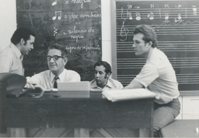

|
Yannis Ioannidis nació en Atenas, Grecia, y en
el conservatorio de esa ciudad comenzó sus
estudios de piano, teoría, armonía.
Posteriormente, después de ganar una beca, se
trasladó a Viena, en cuya Academia de Música
cursó composición con Otto Siegl, dirección
orquestal con Hans Swarowsky, órgano con Kart
Walter y cembalo con Eta Harrich Schneider. En
1968, se trasadó a Venezuela con su esposa, la
pianista Nilyan Pérez, debido a la dictadura que
existía en Grecia.
En Venezuela fueron múltiples sus actividades
artísticas: se presentó regularmente como
director invitado de las orquestas sinfónicas
Venezuela y de Maracaibo. De 1969 a 1971 se
desempeñó como director titular de la Coral del
Centro Venezolano Americano, Caracas. Auspiciado
por el INCIBA, dictó el curso de composición en
la Escuela de Música Juan Manuel Olivares, La
Florida, Caracas, atrayendo a un grupo de
jóvenes compositores ávidos de aprender el arte
musical y no teniendo respuesta con la educación
musical existente en Venezuela, de un retraso
considerable en los conceptos de lenguaje y
técnicas de composición. Sus clases, a contrario
de lo que comúnmente se cree, enseñaron los
procesos de contrapunto polifónico del siglo XVI
y la armonía tonal clásica, para luego enseñar
al alumno el encadenamiento histórico de la
composición y sus estilos hasta llegar a la
contemporaneidad.

Ioannidis en
clase de composición, Escuela Juan Manuel
Olivares, Caracas, ca. 1974.
Izq. a der.: Orlando Gámez, Ioannidis, Carlos
Oviedo, Federico Ruiz.
Fue director titular de la Orquesta de
Cámara de la Radio Nacional, fundada por él y
dirigió la Coral de la Universidad
Metropolitana, universidad en la cual tuvo
a su cargo la segunda cátedra de composición
musical.
Ha ganado dos premios nacionales de música: en
1969 por su obra figuras para conjunto de
cuerdas y en 1970 por actinia para quinteto de
vientos. También en 1970 gano el segundo premio
de composición e el concurso Internacional LOUIS
MOREAU GOTTSCHALK, de U.S.A por la obra
METAPLASIS A para orquesta sinfónica.
Muchas de sus obras se han estrenados en
importantes festivales de música contemporánea,
tales como los de Atenas, en de graz (1969), en
III festival de América y España, Madrid
(1970), el English Bach Festival (1971 y 197)
etc. En diversas oportunidades ha representado a
Venezuela en Festivales y congresos
Internacionales.
Es autor de una teoría general de la música
(“Música” 1968) y sus obras ha sido publicadas
por: Edition Nomos y edition Nakas de Grecia,
Universal Edition de Austria, Moeseler Verlag,
Moeck Verlag y Gerig Verlag de Alemania.
1976 1981 Profesor de composición en el
Conservatorio “Orfeion” de Atenas
1978 1983 Director del departamento de música de
la extensión cultural de la universidad de
Atenas y Director de la coral universitaria
1978 1989 Director y Profesor de composición en
el Conservatorio “Nikos Skalkotas”
1982 1989 Director General (artístico y
administrativo) de la orquesta sinfónica
nacional de Atenas
1989 1992 Director y Profesor de composición en
el Conservatorio “Phillippos Nakas”
1990 1993 Docente del departamento de música
(escuela de filosofía) en la universidad de
Atenas
1984 Fundador de la orquesta sinfónica nacional
juvenil y director de los seminarios anuales en
colaboración con la orquesta juvenil europea.
1983 2000 Presidente y Director Artístico de la
“Coral de Atenas”.
1993 Fundador de la “Sociedad Musical de Atenas”
y Director y profesor de composición del
conservatorio de esta Sociedad
1965 Confundador y miembro del Consejo Directivo
de la sociedad griega de la música contemporánea
1966 1968 Fundador y presidente de sección
griega de la Sociedad internacional “Heinrich
schutz”
1978 1981 Secretario General y 1981 1989
vicepresidente de la “Unión de Compositores ” en
Grecia.
Presidente del comité de la Celebración
internacional del año de la Música 1985. Miembro
dl Consejo Directivo de la Opera de Atenas (1978
1981) del Festival de Atenas (1983 1989) etc.
Estudios generales
Derecho, Universidad de Atenas
Idiomas
Castellano, Griego, Alemán, Inglés, Francés,
Italiano.
Estudios
Musicales
Piano- Teoría- Armonía en el Conservatorio de
Atenas
Composición (Prof. Otto Siegl), dirección
orquestal (Prof. Eta Harrich Schneider) en la
Academia de Música de Viena . (Materias
Secundarias: Análisis Musical, Historia de la
Música, Collegium Musicum).
Cursos especiales: seminarios de dodecafonía
(Prof. Hnas Jelinek) en la Academia de Viena.
Cursos de composición de música actual
(profesores) Ovules, Stockhausen, Ligueti, Kagel
y otros en Darmstadt, Alemania.
Diplomas
Diplomas Superior de Órgano, Academia de
Viena-1959
Diploma Superior de Composición Musical,
Academia de Viena-1963
Docencia
Director del departamento de música y profesor
en el “Pierce College”
(Universidad Norteamericana en Atenas), 1963
1968.
Profesor de composición de música contemporánea
(Curso auspiciado `por el INCIBA), desde 1969.
Profesor de Órgano en el conservatorio nacional
“J.J Landaeta” , desde 1972. Profesor de
composición curso extensión Universitaria en la
Universidad Metropolitana de Caracas, 1973
Actividad
Artística
Director de orquesta, director de coros,
compositor, organista concertista, 1969 1972
director titular de la orquesta de cámara del
INCIBA. Fundador y director de la orquesta de
cámara de Caracas, fundador y director del coro
centro venezolano americano.
|